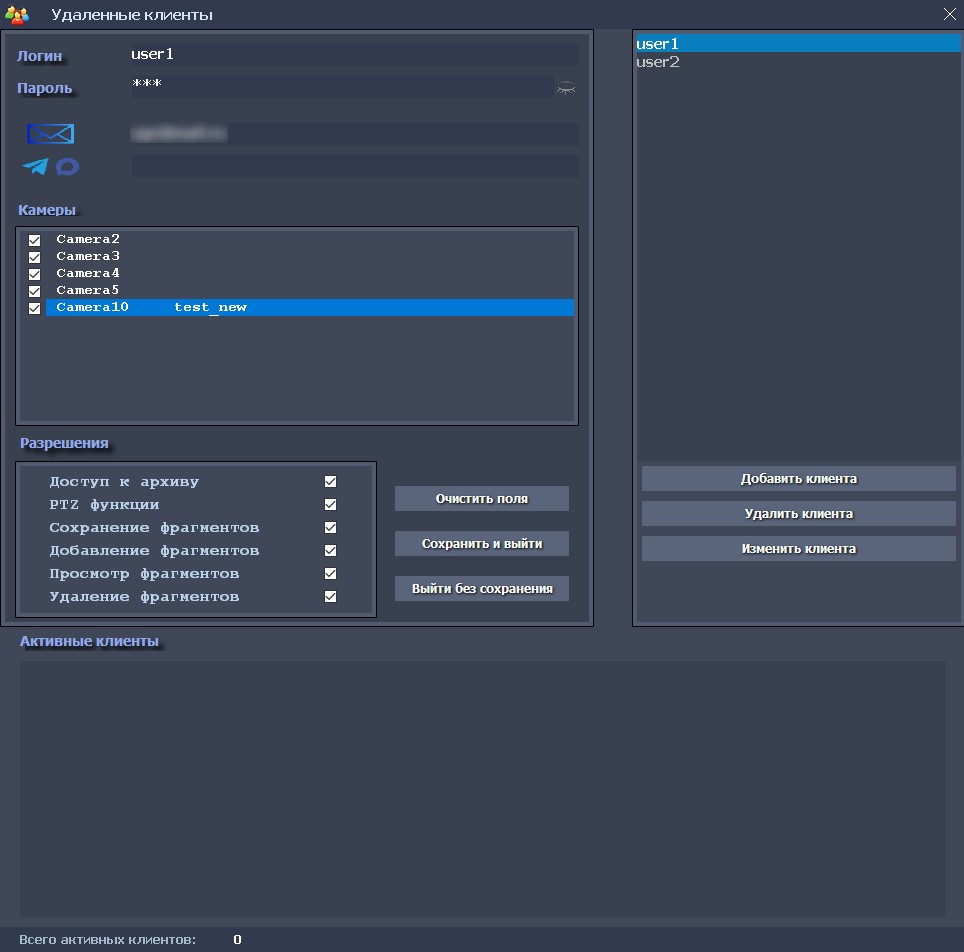
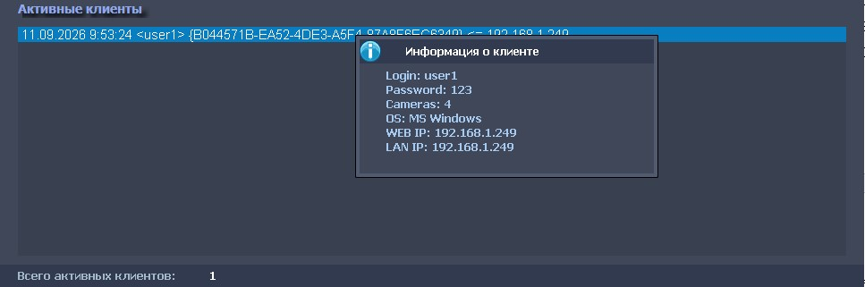

Форма «Клиенты»
Форма «Клиенты»
Эта форма предназначена ведения базы данных удаленных клиентов: их создание, изменение и удаление, присвоение логина, пароля, адресов Email (до 2-х), идентификаторов мессенджеров Telegram и/или Max, выбор камер и разрешений для каждого из клиентов удаленного доступа, к ресурсам системы видеонаблюдения iDLook.

Кнопка «Добавить клиента» используется для добавления нового клиента - после нажатии на нее, необходимо задать логин, пароль, не менее одного адреса Email, выбрать требуемые камеры и разрешения для доступа к ресурсам системы. Это является обязательным условием для сохранения клиента базе данных клиентов.
Заданные, при добавления нового клиента, камеры и разрешения, будут использованы при подключении удаленного клиента к системе, помощью в программы «iDLook Client».
Дополнительный Email и идентификаторы мессенджеров Telegram и/или Max, задаются пользователем в соответствующих полях ввода, с использованием символа-разделителя пробел.
Для получения идентификаторов Max или Telegram:
- На смартфоне, планшете или ПК, в запущенных приложениях Max или Telegram, найдите бота системы iDLook, в поиске, по имени: IDLookBot и перейдите по ссылке на него.
- В окне сообщения, напишите ему /start , в ответ на что, он выдаст ID формата max:123456789 или tg:123456789;
- Сохраните этот ID (вместе с припиской tg: или max:) – в дальнейшем, их можно будет вставить, в соответствующее поле для выбранного клиента, на форме «Клиенты»;
- При совместном использовании двух мессенджеров, используйте символ-разделитель пробел, например, max:123456789 tg:123456789
После введения всех данных о клиенте, необходимо нажать кнопку «Сохранить и выйти», для сохранения информации в базе данных и выхода из режима добавления клиента.
После успешного добавления клиента, к нему на Email, автоматически поступит письмо, содержащее GUID файл для подключения, который необходимо скопировать в корневую папку клиентской программы «iDLook Client», установленной на удаленном компьютере.
Аналогичным образом, действует режим редактирования уже существующего клиента, который устанавливается после выбора клиента в списке клиентов и нажатия на кнопку «Изменить клиента».
Для удаления клиента используется кнопка «Удалить клиента».
На панели «Активные клиенты», отображаются все клиенты, подключенные к системе в текущий момент времени. При нажатии правой клавишей мыши в списке подключенных активных клиентов, откроется панель с краткой информацией о клиенте.
